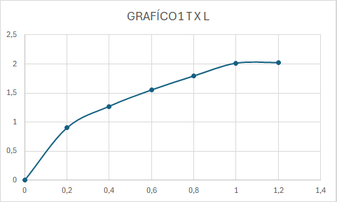
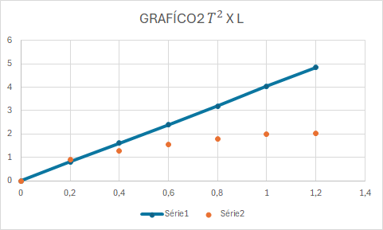
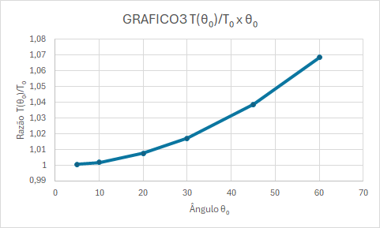
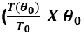

Análise Gráfica:
Tabela 1

Período versus Comprimento (T x L): Esse gráfico serve para mostrar uma regra simples da física que quanto maior for o fio do pêndulo, mais tempo ele demora para ir e voltar (oscilar).
Tabela 2

Período ao Quadrado versus Comprimento (T² x L): Enquanto o gráfico anterior faz uma curva esse gráfico faz quase a mesma coisa, mas ele tem uma peculiaridade de transforma aquela curva difícil do Gráfico1 em uma linha reta perfeita.
Tabela 3

Razão dos Períodos versus Ângulo( 